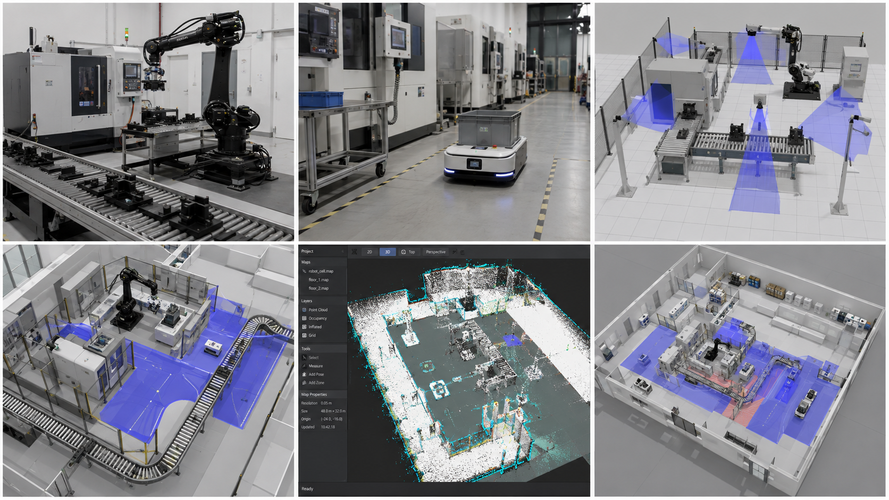
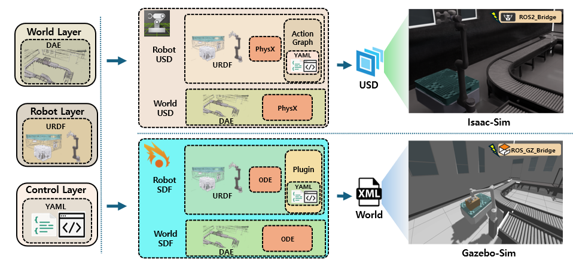
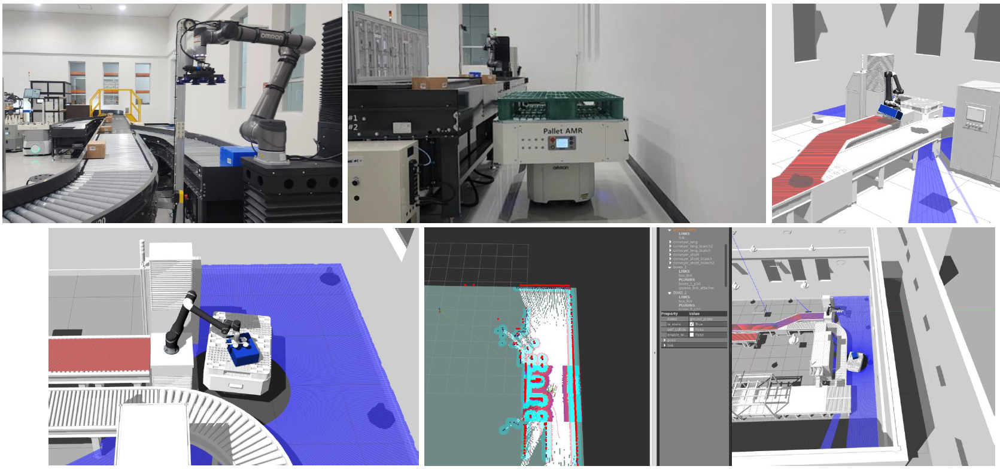

We study how robots, environments, and control software can be represented in reusable simulation models. Our work combines layered information models, Real-to-Sim environment construction, and interoperability testing to support reproducible robot development and evaluation.

Published framework
Robot simulators describe scenes, robot structures, and control interfaces in different formats. Our layered information-model framework organizes these elements into a common structure for wheeled mobile robots, enabling simulation setups to be built for both Isaac Sim and Gazebo.
The published framework uses YAML, URDF, USD, and SDF artifacts with ROS 2 and Nav2. Navigation experiments in both simulators demonstrate how this structure supports reproducible operation across heterogeneous simulation platforms.

Applied work and ongoing modeling research
A usable robot simulation must capture more than visual appearance. Scene geometry, robot structure, collision representations, and physical parameters must be organized so that the environment can support the intended robot task.
Our applied work includes digital-twin environment construction for the National Robot Test Field, bringing physical facilities and robot assets into a simulation setting.
Our next research direction is to connect visual model generation with structural and physical validation, so that automatically generated assets can be evaluated for robot simulation tasks.

Ongoing applied research, 2026
A shared information model supports simulator integration, while execution tests show whether the connected modules behave as intended. Our current conformity-testing project examines module execution through defined interfaces, consistency of twin and simulator states, and conformance to specified scenarios.
This work builds on earlier robot-navigation information models and interoperability demonstrations. The ongoing project focuses on a test software platform for standard execution, interoperability, synchronization, and scenario conformance.
Related projects: robot digital-twin integration and conformity testing